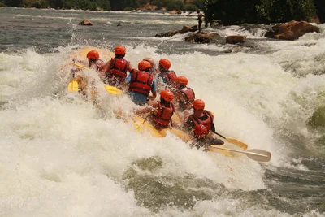

Conquer the rapids, create unforgettable memories. Embrace the thrill of the unknown as you navigate turbulent waters, conquering each rapid with a surge of adrenaline. Whitewater rafting isn't just about the physical challenge; it's about forging lasting bonds with your fellow rafters as you work together to overcome obstacles and celebrate shared victories. Immerse yourself in the beauty of nature, surrounded by breathtaking scenery while you create memories that will stay with you long after the river has calmed
White Water Rafting
History
White Water Rafting began in 1980 as a family-run operation, founded by Keith Jones to share our passion for the Kidron River. Initially offering limited tours with basic equipment, the company focused on personalized experiences and prioritized safety and respect for the river. This dedication quickly earned us a reputation for quality and adventure.
Over the years, White Water Rafting has grown into a leading rafting provider. While expanding its fleet and tour options, the company's core values of personalized service, safety, and environmental respect remain. Still family-owned, White Water Rafting welcomes global adventurers, offering unforgettable river experiences and fostering appreciation for the natural beauty.